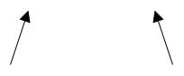

This document defines the Core of SHACL.
SHACL, the Shapes Constraint Language, is a language for describing the structure of RDF graphs. SHACL can be used to define classes and the properties that instances of these classes can have. More general than classes and instances, SHACL introduces the notion of shapes that can formally specify constraints on the structure of RDF nodes and edges. SHACL shapes are themselves represented in RDF graphs called shapes graphs. The RDF graphs that are described by a shapes graph are called data graphs.
SHACL may be used for a variety of purposes such as validating, inferencing, modeling domains, generating ontologies to inform other agents, building user interfaces, generating code, and integrating data.
The introduction includes a Terminology section.
introduces SHACL Core informally, using an example.
and cover SHACL shapes and constraints, as well as property paths.
introduces node expressions, while defines validation in SHACL.
defines the built-in SHACL Core constraint components, and discusses non-validating properties.
The syntax of SHACL is RDF. The examples in this document use Turtle [[rdf12-turtle]] and JSON-LD [[json-ld]]. Other RDF serializations such as RDF/XML may be used in practice. The reader should be familiar with basic RDF concepts [[rdf12-concepts]] such as triples.
This document specifies the Core of SHACL (Shapes Constraint Language), a language for describing and validating RDF graphs. This section introduces SHACL with an overview of the key terminology and an example to illustrate basic concepts.
Throughout this document, the following terminology is used.
Terminology that is linked to portions of RDF 1.2 Concepts and Abstract Syntax is used in SHACL as defined there. Terminology that is linked to portions of SPARQL 1.2 Query Language is used in SHACL as defined there. A single linkage is sufficient to provide a definition for all occurrences of a particular term in this document.
Definitions are complete within this document, i.e., if there is no rule to make some situation true in this document then the situation is false.
Within this document, the following namespace prefix definitions are used:
| Prefix | Namespace |
|---|---|
| `owl:` | `http://www.w3.org/2002/07/owl#` |
| `rdf:` | `http://www.w3.org/1999/02/22-rdf-syntax-ns#` |
| `rdfs:` | `http://www.w3.org/2000/01/rdf-schema#` |
| `sh:` | http://www.w3.org/ns/shacl# |
| `xsd:` | `http://www.w3.org/2001/XMLSchema#` |
| `ex:` | `http://example.com/ns#` |
Within this document, the following JSON-LD context is used:
{
"@context": {
"owl": "http://www.w3.org/2002/07/owl#",
"rdf": "http://www.w3.org/1999/02/22-rdf-syntax-ns#",
"rdfs": "http://www.w3.org/2000/01/rdf-schema#",
"sh": "http://www.w3.org/ns/shacl#",
"xsd": "http://www.w3.org/2001/XMLSchema#",
"ex": "http://example.com/ns#"
}
}
Note that the URI of the graph defining the SHACL vocabulary itself is equivalent to the namespace above, i.e., it includes the `#`. References to the SHACL vocabulary, e.g., via `owl:imports` should include the `#`.
Throughout the document, color-coded boxes containing RDF graphs in Turtle, JSON-LD and SHACL-C will appear. These fragments of Turtle documents use the prefix bindings given above. The JSON-LD document fragments use the context given above. Only the Turtle documents may highlight certain parts. The SHACL-C specification is unstable - SHACL-C document fragments in this document are informative
// This box represents an input shapes graph
{
"@id": "s",
"ex:p": {
"@id": "o"
}
}
// This box represents an input data graph
{
"@graph": [
{
"@id": "ex:Alice",
"@type": "ex:Person"
},
{
"@id": "ex:Bob",
"@type": "ex:Person"
}
]
}
// This box represents an output results graph
{}
Grey boxes such as this include syntax rules that apply to the shapes graph.
`true` denotes the RDF term `"true"^^xsd:boolean`. `false` denotes the RDF term `"false"^^xsd:boolean`.
This document defines the SHACL Core language, also referred to as just SHACL. This specification describes conformance criteria for:
This document includes syntactic rules that shapes and other nodes need to fulfill in the shapes graph (and, for a few properties such as `sh:shapesGraph`, in the data graph). These rules are typically of the form A shape must have... or The values of X are literals or All objects of triples with predicate P must be IRIs. The complete list of these rules can be found in the appendix. Nodes that violate any of these rules are called ill-formed. Nodes that violate none of these rules are called well-formed.
A shapes graph is well-formed if all of the following conditions hold:
A shapes graph that is not well-formed is ill-formed.
SHACL uses the RDF and RDFS vocabularies, but full RDFS inferencing is not required.
However, SHACL processors MAY operate on RDF graphs that include entailments [[!sparql12-entailment]], whether pre-computed before being submitted to a SHACL processor or performed on the fly as part of SHACL processing (without modifying either data graph or shapes graph). To support processing of entailments, SHACL includes the property `sh:entailment` to indicate the inferencing that is required by a given shapes graph.
The values of the property `sh:entailment` are IRIs. Common values for this property are covered by [[!sparql12-entailment]].
SHACL implementations MAY, but are not required to, support entailment regimes. If a shapes graph contains any triple with the predicate `sh:entailment` and object `E` and the SHACL processor does not support `E` as an entailment regime for the given data graph, then the processor MUST signal a failure. Otherwise, the SHACL processor MUST provide the entailments for all of the values of `sh:entailment` in the shapes graph, and any inferred triples MUST be returned by all queries against the data graph during the validation process.
In this section, we will walk you through a simple example that introduces the basics of SHACL Core. You will learn to describe how your data should look, and how a SHACL processor checks whether your data meets that description.
Imagine you have a set of entities (Alice, Bob, Calvin) and you want explain to a computer or another human that
Here is the data we want to describe and validate:
Here is a self-contained example of how to represent our domain of interest. In SHACL terminology, this is called a shapes graph, but you can also think of this as a domain model or an ontology.
When we run SHACL validation on our data graph using our shapes graph, the validator checks each Person against the constraints that we wrote.
In plain English, here is what it finds:
Here is what a SHACL validation report for this example might look like (simplified for readability):
How to read the report:
While SHACL is primarily designed to represent shapes, it also borrows terms and concepts such as `rdfs:Class` and `rdfs:subClassOf` from the RDF Schema namespace. Some people prefer to keep those concepts separate, as shown in the original example above which had separate entities for `ex:Person` and `ex:PersonShape`. However, it is also possible to couple them more closely together, and use `sh:ShapeClass` to declare both a class and a shape at the same time.
Furthermore, sometimes you will see property shapes declared as blank nodes instead of IRIs. This is a more compact notation, but it means that the property shape cannot easily be referenced from the outside; for example, if some other graph wants to reuse a node shape but deactivate a property shape.
The following Turtle example shows these two syntactic variations in action.
We can use the shape declarations above to introduce some of the formal terminology used by SHACL. This may help you read the remainder of this specification.
The target for the shape `ex:PersonShape` is the set of all SHACL instances of the class `ex:Person`. This is specified using the property `sh:targetClass`. During the validation, these target nodes become focus nodes for the shape. The shape `ex:PersonShape` is a node shape, which means that it applies to the focus nodes. It declares constraints on the focus nodes, for example using the parameters `sh:closed` and `sh:ignoredProperties`. The node shape also declares two other constraints with the property `sh:property`, and each of these is backed by a property shape. These property shapes declare additional constraints using parameters such as `sh:datatype` and `sh:maxCount`.
Some of the property shapes specify parameters from multiple constraint components in order to restrict multiple aspects of the property values. For example, in the property shape for `ex:ssn`, parameters from three constraint components are used. The parameters of these constraint components are `sh:datatype`, `sh:pattern` and `sh:maxCount`. For each focus node the property values of `ex:ssn` will be validated against all three components.
The following introduction is non-normative.
The following informal diagram provides an overview of some of the key classes in the SHACL vocabulary. Each box represents a class. The boxes under the class name list a small subset of the frequently used properties that instances of these classes may have, together with their value types. The arrows indicate `rdfs:subClassOf` triples.

The Turtle serialization of the SHACL vocabulary contains the complete SHACL vocabulary.
Note that the definition above does not include all of the syntax rules of well-formed shapes. Those are found throughout the document and summarized in Appendix . For example, shapes that have literals as values for `sh:targetClass` are ill-formed.
Informally, a shape determines how to validate a focus node based on the values of properties and other characteristics of the focus node. For example, shapes can declare the condition that a focus node be an IRI or that a focus node has a particular value for a property and also a minimum number of values for the property.
The SHACL Core language defines two types of shapes:
`sh:Shape` is the SHACL superclass of those two shape types in the SHACL vocabulary. Its subclasses `sh:NodeShape` and `sh:PropertyShape` can be used as SHACL type of node and property shapes, respectively.
Shapes can declare constraints using the parameters of constraint components.
A constraint component is an IRI. Each constraint component has one or more mandatory parameters, each of which is a property. Each constraint component has zero or more optional parameters, each of which is a property. The parameters of a constraint component are its mandatory parameters plus its optional parameters.
For example, the component `sh:MinCountConstraintComponent` declares the parameter `sh:minCount` to represent the restriction that a node has at least a minimum number of values for a particular property.
For a constraint component `C` with mandatory parameters `p1`, ... `pn`, a shape `s` in a shapes graph `SG` declares a constraint that has kind `C` with mandatory parameter values `<p1,v1>`, ... `<pn,vn>` in `SG` when `s` has `vi` as a value for `pi` in `SG`. For constraint components with optional parameters, the constraint declaration consists of the values that the shape has for all mandatory and optional parameters of that component.
Some constraint components declare only a single parameter. For example `sh:ClassConstraintComponent` has the single parameter `sh:class`. These parameters may be used multiple times in the same shape, and each value of such a parameter declares an individual constraint. The interpretation of such declarations is conjunction, i.e. all constraints apply. The following example specifies that the values of `ex:customer` have to be SHACL instances of both `ex:Customer` and `ex:Person`.
Some constraint components such as `sh:PatternConstraintComponent` declare more than one parameter. Shapes that have more than one value for any of the parameters of such components are ill-formed.
One way to bypass this syntax rule is to spread the constraints across multiple (property) shapes, as illustrated in the following example.
Constraint components are associated with validators, which provide instructions (for example expressed via SPARQL queries) on how the parameters are used to validate data. Validating an RDF term against a shape involves validating the term against each constraint where the shape has values for all mandatory parameters of the component of the constraint, using the validators associated with the respective component.
The list of constraint components included in SHACL Core is described in . SHACL-SPARQL can be used to declare additional constraint components based on SPARQL.
An RDF term that is validated against a shape using the triples from a data graph is called a focus node.
The remainder of this section is non-normative.
The set of focus nodes for a shape may be identified as follows:
Target declarations of a shape in a shapes graph are triples with the shape as the subject and certain properties described in this document (e.g., `sh:targetClass`) as predicates. Furthermore, sh:shape triples can declare targets in the data graph. Target declarations can be used to produce focus nodes for a shape. The target of a target declaration is the set of RDF terms produced by applying the rules described in the remainder of this section to the data graph. The target of a shape is the union of all RDF terms produced by the individual targets that are declared for the shape.
SHACL Core includes the following kinds of targets:
The remainder of this introduction is non-normative.
RDF terms produced by targets are not required to exist as nodes in the data graph. Targets of a shape are ignored whenever a focus node is provided directly as input to the validation process for that shape. This includes the cases where the shape is a value of one of the shape-expecting constraint parameters (such as `sh:node`) and a focus node is determined during the validation of the corresponding constraint component (such as `sh:NodeConstraintComponent`). In such cases, the provided focus node does not need to be in the target of the shape.
A node target is specified using the `sh:targetNode` predicate. Each value of `sh:targetNode` in a shape is a well-formed node expression.
evalExpr(expr, data graph, s, {}) are targets
for the data graph `DG` as focus graph.
The remainder of this section is non-normative.
With the example data below, only `ex:Alice` is the target of the provided shape:
A class target is specified with the `sh:targetClass` predicate. Each value of `sh:targetClass` in a shape is an IRI.
The remainder of this section is non-normative.
In this example, only `ex:Alice` and `ex:Bob` are focus nodes. Note that, according to the SHACL instance definition, all the `rdfs:subClassOf` declarations needed to walk the class hierarchy need to exist in the data graph. However, the `ex:Person a rdfs:Class` triple is not required to exist in either graphs.
In the following example, the selected focus node is only `ex:Who`.
Note that the `rdfs:subClassOf` triples may be queried from the shapes graph (see ) in which case the `rdfs:subClassOf` triple from the example above would not be required to be in the data graph.
Informally, if a shape is also declared to be a class in the shapes graph then all SHACL instances of this class are a target for the shape.
If `s` is a SHACL instance of `sh:NodeShape` or `sh:PropertyShape` in an RDF graph `G` and `s` is also a SHACL instance of `rdfs:Class` in `G` and `s` is not an IRI then `s` is an ill-formed shape in `G`.
The SHACL namespace includes a dedicated class `sh:ShapeClass` that can serve as a syntactic shortcut for the implicit class targets pattern.
Please keep in mind that `sh:ShapeClass` may not be understood to be a subclass of `rdfs:Class` by some SHACL-unaware implementations. It is therefore recommended (but not required) that graphs that use `sh:ShapeClass` include an `owl:imports sh:` statement.
The remainder of this section is non-normative.
In the following example, `ex:Alice` is a focus node, because it is a SHACL instance of `ex:Person` which is both a class and a shape in the shapes graph.
In the following variation of the example above, `ex:Person` is declared as an instance of `sh:ShapeClass`, with the same interpretation.
A subjects-of target is specified with the predicate `sh:targetSubjectsOf`. The values of `sh:targetSubjectsOf` in a shape are IRIs.
The remainder of this section is non-normative.
In the example above, only `ex:Alice` is validated against the given shape, because it is the subject of a triple that has `ex:knows` as its predicate.
An objects-of target is specified with the predicate `sh:targetObjectsOf`. The values of `sh:targetObjectsOf` in a shape are IRIs.
The remainder of this section is non-normative.
In the example above, only `ex:Bob` is validated against the given shape, because it is the object of a triple that has `ex:knows` as its predicate.
A where target is specified with the `sh:targetWhere` predicate. Each value of `sh:targetWhere` in a shape is a well-formed shape.
The remainder of this section is non-normative.
In this example, only `ex:Bob` is a focus node of `ex:AdultPerson` because he conforms to the two constraints defined by the `sh:targetWhere` shape. Based on the `sh:class` constraint, he is a SHACL instance of `ex:Person` and his `ex:age` is 18 or greater. However, as the `ex:AdultPerson` shape states that all adults must have one value for `ex:votedFor`, `ex:Bob` does not conform to `ex:AdultPerson`.
Note that `sh:targetWhere` can be interpreted as a "definition" providing necessary and sufficient conditions for a shape. It can therefore potentially be used for "classification" tasks, e.g., to collect all nodes that fulfill a given set of conditions.
As a word of caution, performance of the computation of where targets can differ between implementations. In the worst case, an engine will need to iterate over all nodes in the data graph to filter them one-by-one.
An explicit shape target is specified using the `sh:shape` predicate. Each value of `sh:shape` is an IRI.
The remainder of this section is non-normative.
`sh:shape` is different from `sh:targetNode`, although both can be used to link individual nodes with shapes. `sh:shape` points from a specific subject node to an object shape. Furthermore, while the `sh:targetNode` triples are queried from the shapes graph, the `sh:shape` triples are expected in the data graph.
With the example data below, only `ex:Alice` is the target of the provided shape:
Shapes can have at most one value for the property `sh:severity` in the shapes graph. Each value of `sh:severity` is an IRI.
In addition to declaring severities per shape, the property `sh:severity` can also be used on a reifier for a triple where the shape is the subject and one of the parameters of the constraint is the predicate.
Let `T` be the set of triples that represent a constraint in a shape. A shapes graph can specify at most one value for the property `sh:severity` in the reifiers of the triples in `T`.
A value of `sh:severity` is called a severity. SHACL includes the IRIs listed in the table below to represent [=severities=]. These are declared in the SHACL vocabulary as SHACL instances of `sh:Severity`.
| Severity | Description |
|---|---|
| `sh:Trace` | A trace message that is not a constraint violation. |
| `sh:Debug` | A debug message that is not a constraint violation. |
| `sh:Info` | A non-critical constraint violation indicating an informative message. |
| `sh:Warning` | A non-critical constraint violation indicating a warning. |
| `sh:Violation` | A constraint violation. |
The remainder of this section is non-normative.
The validation process handles the values of `sh:severity` according to conformance checking. Additionally, user interface tools may use the values to categorize validation results. The values of `sh:severity` are used by SHACL processors to populate the `sh:resultSeverity` field of validation results, see section on severity in validation results. Any IRI can be used as a severity.
For every shape and constraint, `sh:Violation` is the default if `sh:severity` is unspecified. The following example illustrates this.
The following example is a variation of the shapes graph above, but using reification to specify the severity of individual constraints:
Shapes can have values for the property `sh:message`. The values of `sh:message` are literals with datatype `xsd:string`, `rdf:dirLangString`, `rdf:langString`, or `rdf:HTML`. A subject should neither have more than one value for `sh:message` with the same language tag, nor multiple values with datatype `xsd:string`.
If a shape has at least one value for `sh:message` in the shapes graph, then all validation results produced as a result of the shape will have exactly these messages as their value of `sh:resultMessage`, i.e. the values will be copied from the shapes graph into the results graph.
In addition to declaring messages per shape, the property `sh:message` can also be used on a reifier for a triple where the shape is the subject and one of the parameters of the constraint is the predicate.
Let `T` be the set of triples that represent a constraint in a shape. A shapes graph can specify at most one value for the property `sh:message` in the reifiers of the triples in `T`.
The remainder of this section is non-normative.
See the section on `sh:resultMessage` in the validation results on further details on how the values of `sh:resultMessage` are populated.
The example from the previous section uses this mechanism to supply the second validation result with two messages. The following example is a variation where the message is declared using reification.
Shapes can have at most one value for the property `sh:deactivated`. The value of `sh:deactivated` is a node expression that must have either `true` or `false` as the (only) output node.
Let `expr` be the value of `sh:deactivated` in a shape.
If evalExpr(expr, data graph, focus node, {}) produces `true` as its only
output node, the shape is called deactivated.
Deactivated shapes are ignored during validation.
In addition to deactivating all constraints for a shape, it is also possible to deactivate individual constraints. This is done using reification.
A triple that has a shape as subject, a parameter (such as `sh:minCount`) as predicate can have at most one reifier with a value for the property `sh:deactivated`.
Let `expr` be the value of `sh:deactivated` in a reifier on a triple
that has shape subject and a parameter as predicate.
If evalExpr(expr, data graph, focus node, {}) produces `true` as its only
output node, the constraints that use the triple are called deactivated constraints.
Deactivated constraints are ignored during validation.
The remainder of this section is non-normative.
In SHACL Core, the only valid values for `sh:deactivated` are the constant literal node expressions `true` and `false`.
Use cases of this feature include shape reuse and debugging. In scenarios where shapes from other graphs or files are imported into a given shapes graph, `sh:deactivated` can be set to `true` in the local shapes graph for imported shapes to exclude shapes that do not apply in the current application context. This makes it possible to reuse SHACL graphs developed by others even if you disagree with certain assumptions made by the original authors. If a shape author anticipates that a shape may need to be disabled or modified by others, it is a good practice to use IRIs instead of blank nodes for the actual shapes. For example, a property shape for the property `ex:name` at the shape `ex:PersonShape` may have the IRI `ex:PersonShape-name`. Another typical use case of `sh:deactivated` is during the development and testing of shapes, to (temporarily) disable certain shapes.
The following example illustrates the use of `sh:deactivated` to deactivate a shape. In cases where shapes are imported from other graphs, the `sh:deactivated true` triple would be in the importing graph.
The following variation uses reification to deactivate just the `sh:minCount` constraint without affecting other constraints at the same property shape.
A node shape is a shape in the shapes graph that is not the subject of a triple with `sh:path` as its predicate. It is recommended, but not required, for a node shape to be declared as a SHACL instance of `sh:NodeShape`. SHACL instances of `sh:NodeShape` cannot have a value for the property `sh:path`.
Informally, node shapes specify constraints that need to be met with respect to focus nodes. In contrast to property shapes they primarily apply to the focus node itself, not to its property values.
A property shape is a shape in the shapes graph
that is the subject of a triple that has `sh:path` as its predicate.
A shape has at most one value for `sh:path`.
The value of `sh:path` in a property shape is a well-formed
SHACL property path.
It is recommended, but not required, for a property shape to be declared as a SHACL instance of `sh:PropertyShape`.
SHACL instances of `sh:PropertyShape` have one value for the property `sh:path`.
A property shape has at most one value for the property `sh:values` and this value is a well-formed node expression.
A property shape has at most one value for the property `sh:defaultValue` and this value is a well-formed node expression.
A property shape can only have values for `sh:values` and/or `sh:defaultValue` when its value for `sh:path` is a Predicate Path.
Informally, property shapes specify constraints that need to be met with respect to the nodes that can be reached from the focus node by following the property or other SHACL property path specified using `sh:path`, together with the nodes produced by evaluating the node expression specified using `sh:values`. If there are no such nodes, the node expression specified using `sh:defaultValue` is evaluated instead. See for the exact definition.
Note that SHACL Core only defines constant node expressions (IRIs and literals), so that in SHACL Core, `sh:values` and `sh:defaultValue` can only produce constant values. Extensions such as [[shacl12-node-expr]] and [[shacl12-sparql]] define further kinds of node expressions.
Note that the definitions of well-formed property shapes and node shapes make these two sets of nodes disjoint.
The following example illustrates some syntax variations of property shapes.
Property paths can be used at `sh:path` to derive the value nodes of a property shape.
SHACL includes RDF terms to represent the following subset of SPARQL property paths: `PredicatePath`, `InversePath`, `SequencePath`, `AlternativePath`, `ZeroOrMorePath`, `OneOrMorePath` and `ZeroOrOnePath`.
The following sub-sections provide syntax rules of well-formed SHACL property paths together with mapping rules to SPARQL 1.2 property paths. These rules define the path mapping `path(p,G)` in an RDF graph `G` of an RDF term `p` that is a SHACL property path in `G`. Two SHACL property paths are considered equivalent paths when they map to the exact same SPARQL property paths.
A node in an RDF graph is a well-formed SHACL property path `p` if it satisfies exactly one of the syntax rules in the following sub-sections. A node `p` is not a well-formed SHACL property path if `p` is a blank node and any path mappings of `p` directly or transitively reference `p`.
The following example illustrates some valid SHACL property paths, together with their SPARQL 1.2 equivalents.
A predicate path is an IRI.
If `p` is a predicate path, then `path(p,G)` is a SPARQL `PredicatePath` with `p` as `iri`.
A sequence path is a blank node that is a SHACL list with at least two members and each member is a well-formed SHACL property path.
If `p` is a sequence path in `G` with list members
v1, v2, ..., vn,
then `path(p,G)` is a SPARQL `SequencePath` of
path(v1,G) as `elt1`, and the results of the path mapping
of the list node of v2 as `elt2`.
Informal note: the nodes in such a SHACL list should not have values for other properties beside `rdf:first` and `rdf:rest`.
An alternative path is a blank node that is the subject of exactly one triple in `G`. This triple has `sh:alternativePath` as predicate, `L` as object, and `L` is a SHACL list with at least two members and each member of `L` is a well-formed SHACL property path.
If `p` is an alternative path in `G`,
then, for the members of its SHACL list `L`:
v1, v2, ..., vn,
`path(p,G)` is a SPARQL `AlternativePath` with
path(v1,G) as `elt1` followed by an `AlternativePath`
for v2 as `elt2`, ..., up to path(vn,G).
An inverse path is a blank node that is the subject of exactly one triple in `G`. This triple has `sh:inversePath` as predicate, and the object `v` is a well-formed SHACL property path.
If `p` is an inverse path in `G`, then `path(p,G)` is a SPARQL `InversePath` with `path(v,G)` as its `elt`.
A zero-or-more path is a blank node that is the subject of exactly one triple in `G`. This triple has `sh:zeroOrMorePath` as predicate, and the object `v` is a well-formed SHACL property path.
If `p` is a zero-or-more path in `G`, then `path(p,G)` is a SPARQL `ZeroOrMorePath` with `path(v,G)` as its `elt`.
A one-or-more path is a blank node that is the subject of exactly one triple in `G`. This triple has `sh:oneOrMorePath` as predicate, and the object `v` is a well-formed SHACL property path.
If `p` is a one-or-more path in `G`, then `path(p,G)` is a SPARQL `OneOrMorePath` with `path(v,G)` as its `elt`.
A zero-or-one path is a blank node that is the subject of exactly one triple in `G`. This triple has `sh:zeroOrOnePath` as predicate, and the object `v` is a well-formed SHACL property path.
If `p` is a zero-or-one path in `G`, then `path(p,G)` is a SPARQL `ZeroOrOnePath` with `path(v,G)` as its `elt`.
This section introduces the concept of node expressions. SHACL Core supports node expressions in the following features:
Readers who are only interested in SHACL Core can typically skip this section. Given that Core only supports constant IRIs and literals as node expressions, the use cases of node expressions are identical to traditional use of SHACL Core.
The SHACL Core specification defines only the node expression functions of the next two subsections. [[shacl12-node-expr]] provides more background on the general design of node expressions and includes a comprehensive library of node expression functions. Other specifications such as [[shacl12-sparql]] introduce additional functions, using blank nodes. Therefore node expressions serve as an extension point of SHACL.
A node expression that is an IRI is called an IRI expression with the function name `sh:IRIExpression`.
A node in an RDF graph is a well-formed IRI expression if it is an IRI.
The output nodes of an IRI expression are the list consisting of exactly the node expression itself:
`evalExpr(expr, focusGraph, focusNode, scope) -> [expr]`
A node expression that is a literal is called a literal expression with the function name `sh:LiteralExpression`.
A node in an RDF graph is a well-formed literal expression if it is a literal.
The output nodes of a literal expression are the list consisting of exactly the node expression itself:
`evalExpr(expr, focusGraph, focusNode, scope) -> [expr]`
Validation takes a data graph and a shapes graph as input and produces a validation report containing the results of the validation. Conformance checking is a simplified version of validation, producing a boolean result. A system that is capable of performing validation is called a processor, and the verb processing is sometimes used to refer to the validation process.
SHACL defines an RDF Validation Report Vocabulary that can be used by processors that produce validation reports as RDF results graphs. This specification uses the SHACL results vocabulary for the normative definitions of the validators associated with the constraint components. Only SHACL implementations that can produce all of the mandatory properties of the Validation Report Vocabulary are standards-compliant.
A shapes graph is an RDF graph in the role of providing shapes and related information to a SHACL validation process so that a data graph can be validated against the shapes.
The `sh:ShapesGraph` class MAY be used as an `rdf:type` of the IRI of a graph that typically acts in the role of a shapes graph. The graph type classes (such as `sh:DataGraph` and `sh:ShapesGraph`) represent roles that are not mutually exclusive; a single graph MAY be typed with more than one of these classes.
The shapes graph for a given validation may be the result of combining multiple shapes graphs, for example through `owl:imports` or `sh:shapesGraph`. However it is constructed, the shapes graph used for validation MUST remain fixed during the validation process. See for further details.
The remainder of this section is non-normative.
Shapes graphs can be reusable validation modules that can be cross-referenced with the predicate `owl:imports`. As a pre-validation step, SHACL processors should extend the originally provided shapes graph by transitively following and importing all referenced shapes graphs through the `owl:imports` predicate. When resolving an imported IRI, if the retrieved graph contains a triple with the imported IRI as the object of `owl:versionIRI`, the processor should treat the subject of that triple as the shapes graph IRI of the imported graph for the purpose of following further `owl:imports` statements. Formally, processors should use the property path `^owl:versionIRI?/owl:imports` iteratively to resolve imports, so that version IRIs can be used to import versioned shapes graphs.
In the following example, the shapes graph imports `<http://example.com/shapes/company/v2>`. When the processor retrieves the graph at that IRI, it finds that IRI declared as the `owl:versionIRI` of `<http://example.com/shapes/company>`. The processor then uses `<http://example.com/shapes/company>` to identify that graph when following further `owl:imports` statements, in this case importing `<http://example.com/shapes/base>`.
The resulting graph forms the immutable shapes graph for validation.
When using `owl:versionIRI` to import versioned shapes graphs, care should be taken to avoid importing incompatible versions. In particular, the import closure of a shapes graph SHOULD NOT contain two graphs that are different versions of the same series, or where one declares `owl:incompatibleWith` the other. Such a shapes graph is considered ill-formed. See the definition of well-formed shapes graphs for details.
In addition to shape declarations, the shapes graph may contain additional information for the SHACL processor such as `sh:entailment` statements.
Any RDF graph can be a data graph.
The `sh:DataGraph` class MAY be used as an `rdf:type` of the IRI of a graph that is typically used as a data graph. The graph type classes (such as `sh:DataGraph` and `sh:ShapesGraph`) represent roles that are not mutually exclusive; a single graph MAY be typed with more than one of these classes. For example, a shapes graph MAY also play the role of a data graph when the shapes themselves will be validated.
The remainder of this section is non-normative.
A data graph is one of the inputs to the SHACL processor for validation. SHACL processors treat it as a general RDF graph and makes no assumption about its nature. For example, it can be an in-memory graph or a named graph from an RDF dataset or a SPARQL endpoint.
SHACL can be used with RDF graphs that are obtained by any means, e.g. from the file system, HTTP requests, or RDF datasets. SHACL makes no assumptions about whether a graph contains triples that are entailed from the graph under any RDF entailment regime.
The data graph is expected to include all the ontology axioms related to the data and especially all the `rdfs:subClassOf` triples in order for SHACL to correctly identify class targets and validate Core SHACL constraints.
`owl:imports` in the data graph is not enacted, in order to avoid uncontrolled increase of validation work. If you want to validate several related ontologies, pass all of them to the SHACL processor (together or one by one), do not rely on `owl:imports` links.
While SHACL does not enact `owl:imports` in the data graph, data graph maintainers should remain aware of applications that do rely on `owl:imports` behavior as an import directive. In particular, some applications may be syntactically reliant on the direct presence of `X a owl:Ontology .` such that `X owl:imports Y .` will process the `owl:imports` statement as a directive to load `Y`. See OWL 2 Web Ontology Language Mapping to RDF Graphs, Section 3.1.1 for further detail. Hence, when using statements of the form `X a sh:DataGraph .`, `X a owl:Ontology .` should also be included.
Some features of SHACL (such as , , and ) rely on the notion of SHACL type to determine whether a node is a SHACL instance of a given class. By default, this is determined by looking up `rdfs:subClassOf` and `rdf:type` triples in the data graph. However, this is insufficient in some cases, as `rdfs:subClassOf` triples are often stored as part of the class and/or shape definitions and not the instance data.
SHACL processors SHOULD offer a parameter `subClassOfInShapesGraph` that, if set to `true`, should alter the definition of SHACL Type so that the `rdfs:subClassOf` triples are queried from the shapes graph in addition to the data graph. The `rdf:type` triples are always expected to be in the data graph.
A data graph can include triples used to suggest one or more graphs to a SHACL processor with the predicate `sh:shapesGraph`. Every value of `sh:shapesGraph` is an IRI representing a graph that SHOULD be included into the shapes graph used to validate the data graph. The value of `sh:shapesGraph` may be a value of `owl:versionIRI`, so the same strategy of resolving a shapes graph IRI from a version IRI, described for Shapes Graphs, applies here.
In the following example, a SHACL processor SHOULD use the union of `ex:graph-shapes1` and `ex:graph-shapes2` graphs (and their `owl:imports`) as the shapes graph when validating the given graph.
Validation is a mapping from some input to validation results, as defined in the following paragraphs.
Validation of a data graph against a shapes graph: Given a data graph and a shapes graph, the validation results are the union of results of the validation of the data graph against all shapes in the shapes graph.
Validation of a data graph against a shape: Given a data graph and a shape in the shapes graph, the validation results are the union of the results of the validation of all focus nodes that are in the target of the shape in the data graph.
Validation of a focus node against a shape: Given a focus node in the data graph and a shape in the shapes graph, the validation results are the union of the results of the validation of the focus node against all constraints declared by the shape, unless the shape has been deactivated, in which case the validation results are empty.
Validation of a focus node against a constraint: Given a focus node in the data graph and a constraint of kind `C` in the shapes graph, the validation results are defined by the validators of the constraint component `C`. These validators typically take as input the focus node, the specific values of the parameters of `C` of the constraint in the shapes graph, and the value nodes of the shape that declares the constraint.
During validation, the data graph and the shapes graph MUST remain immutable, i.e. both graphs at the end of the validation MUST be identical to the graph at the beginning of validation. SHACL processors MUST NOT change the graphs that they use to construct the shapes graph or the data graph, even if these graphs are part of an RDF store that allows changes to its stored graphs. SHACL processors MAY store the graphs that they create, such as a graph containing validation results, and this operation MAY change existing graphs in an RDF store, but not any of the graphs that were used to construct the shapes graph or the data graph. SHACL processing is thus idempotent.
Validation and conformance checking can result in a failure. For example, a particular SHACL processor might allow recursive shapes but report a failure if it detects a loop within the data. Failures can also be reported due to resource exhaustion. Failures are signalled through implementation-specific channels.
If the shapes graph contains ill-formed nodes, then the result of the validation process is undefined. A SHACL processor SHOULD produce a failure in this case. See also .
The following properties are the so-called shape-expecting constraint parameters in SHACL Core:
The following properties are the so-called list-taking constraint parameters in SHACL Core:
In addition, `sh:class`, `sh:datatype`, `sh:nodeKind`, `sh:rootClass` and `sh:uniqueValuesFor` are list-taking constraint parameters when their value is a SHACL list.
A shape `s1` in an RDF graph `G` refers to shape `s2` in `G` if it has `s2` as value for some non-list-taking, shape-expecting parameter of some constraint component or `s2` as a member of the value for some list-taking, shape-expecting parameter of some constraint component, or if it has `s2` as value for `sh:targetWhere`. A shape in an RDF graph `G` is a recursive shape in `G` if it is related to itself by the transitive closure of the refers relationship in `G`.
The validation with recursive shapes is not defined in SHACL and is left to SHACL processor implementations. For example, SHACL processors may support recursion scenarios or produce a failure when they detect recursion.
The remainder of this section is non-normative.
The recursion policy above has been selected to support a large variety of implementation strategies. By leaving recursion undefined, implementations may choose to not support recursion so that they can issue a static set of SPARQL queries (against SPARQL end points) without having to support cycles. The Working Group is aware that other implementations may support recursion and that some shapes graphs may rely on these specific characteristics. The expectation is that future work, for example in W3C Community Groups, will lead to the definition of specific dialects of SHACL where recursion is well-defined.
A focus node conforms to a shape if and only if the set of results of the validation of the focus node against the shape does not contain any validation results with a severity level of the set of disallowed levels and no failure has been reported by it.
The set of disallowed severity levels is determined by the validation process that the conformance checking is part of, see . The same set applies to the validation itself and to all conformance checks performed during it, including nested ones.
By default the set of disallowed severity levels includes `sh:Warning` and `sh:Info`. For example, a value node does not conform to the shape of `sh:node` if the validation against that shape produces a validation result with severity `sh:Warning`.
Conformance checking produces `true` if and only if a given focus node conforms to a given shape, and `false` otherwise.
Note that all shape-expecting constraint parameters of SHACL Core rely on conformance checking. In these cases, the validation results used to determine the outcome of conformance checking are separated from those of the surrounding validation process and typically do not end up in the same validation report (except perhaps as values of `sh:detail`).
A data graph MAY use the property `sh:conformsToShapesGraph` to indicate that it conforms to a given shapes graph. The value is an IRI identifying the shapes graph. This property has `rdfs:domain sh:DataGraph` and `rdfs:range sh:ShapesGraph`.
See the Conforms To Shapes Graph section of SHACL 1.2 Profiling for further details on the use of this property.
The validation report is the result of the validation process that reports the conformance and the set of all validation results. The validation report is described with the SHACL Validation Report Vocabulary as defined in this section. This vocabulary defines the RDF properties to represent structural information that may provide guidance on how to identify or fix violations in the data graph.
SHACL-compliant processors MUST be capable of returning a validation report with all required validation results described in this specification. SHACL-compliant processors MAY support optional arguments that make it possible to limit the number of returned results. This flexibility is for example needed in some large-scale dataset validation use cases.
The following graph represents an example of a validation report for the validation of a data graph that conforms to a shapes graph.
The following graph represents an example of a validation report for the validation of a data graph that does not conform to a shapes graph. Note that the specific value of `sh:resultMessage` is not mandated by SHACL and considered implementation-specific.
The result of a validation process is an RDF graph with exactly one SHACL instance of `sh:ValidationReport`. The RDF graph MAY contain additional provenance metadata. In particular, a validation report MAY use `sh:usedDataGraph` to identify the data graph that was validated, `sh:usedShapesGraph` to identify the shapes graph that was used, and `sh:usedConfiguration` to link to a `sh:ProcessorConfiguration` instance describing the processor's state and settings at the time of validation. Together, these properties allow a report to be self-contained with respect to the context in which it was produced.
See the Validation Report section of SHACL 1.2 Profiling for further details and examples of self-contained validation reports.
Each SHACL instance of `sh:ValidationReport` in the results graph has exactly one value for the property `sh:conforms` and the value is of datatype `xsd:boolean`. It represents the outcome of the conformance checking.
Each validation process uses a set of disallowed severity levels, the conformance-disallow set. The default set consists of `sh:Violation`, `sh:Warning`, and `sh:Info`. A validation engine MAY provide mechanisms to customize this set.
Each SHACL instance of `sh:ValidationReport` in the results graph MAY have one or more values for the property `sh:conformanceDisallows`. All values of `sh:conformanceDisallows` MUST be IRIs. If the validation process has used a set other than the default set, then the values of `sh:conformanceDisallows` MUST be exactly the members of that set. If there are no values for `sh:conformanceDisallows`, then the default set has been used.
Presence of any `sh:ValidationResult` with a severity level in the set of disallowed severity levels MUST result in a `sh:conforms` value of `false` on the associated `sh:ValidationReport` instance.
For every validation result that is produced by a validation process (except those mentioned in the context of conformance checking), the SHACL instance of `sh:ValidationReport` in the results graph has a value for the property `sh:result`. Each value of `sh:result` is a SHACL instance of the class `sh:ValidationResult`.
SHACL validation engines are not strictly required to check whether the shapes graph is well-formed. Implementations that do perform such checks (e.g., when the shapes graph is installed in the system, or before or during the validation) SHOULD use the property `sh:shapesGraphWellFormed` to inform the consumer of the validation report about this fact. If a SHACL instance of `sh:ValidationReport` in the results graph has `true` as the value for `sh:shapesGraphWellFormed` then the processor was certain that the shapes graph that was used for the validation process is well-formed.
A SHACL instance of `sh:ValidationReport` in the results graph MAY have a value for the property `sh:usedDataGraph`. The value is an IRI that identifies the data graph that was validated by the processor to produce the report. The version IRI of a data graph MAY also be used as a value for this property.
A SHACL instance of `sh:ValidationReport` in the results graph MAY have a value for the property `sh:usedShapesGraph`. The value is an IRI that identifies the shapes graph that was used by the processor during the validation process. The version IRI of a shapes graph MAY also be used as a value for this property.
A SHACL instance of `sh:ValidationReport` in the results graph MAY have a value for the property `sh:usedConfiguration`. The value is an instance of `sh:ProcessorConfiguration` describing the state and settings of the processor that produced the report. SHACL processors MUST NOT alter their validation behavior based on the contents of a `sh:ProcessorConfiguration` instance.
`sh:ProcessorConfiguration` is the class of processor configurations. Instances of this class describe the state and settings of a SHACL processor at the time it produced a validation report. The properties of `sh:ProcessorConfiguration` instances are not defined by this specification.
Implementations are free to define whatever properties they need on instances of this class, such as processor name, processor version, maximum recursion depth, or other runtime parameters.
SHACL defines `sh:ValidationResult` as a subclass of `sh:AbstractResult` to report individual SHACL validation results. SHACL implementations may use other SHACL subclasses of `sh:AbstractResult`, for example, to report successfully completed constraint checks or accumulated results.
All the properties described in the remaining sub-sections of this section can be specified in a `sh:ValidationResult`. The properties `sh:focusNode`, `sh:resultSeverity` and `sh:sourceConstraintComponent` are the only properties that are mandatory for all validation results.
Each validation result has exactly one value for the property `sh:focusNode` that is equal to the focus node that has caused the result. This is the focus node that was validated when the validation result was produced.
Validation results may have a value for the property `sh:resultPath` pointing at a well-formed SHACL property path. For results produced by a property shape, this SHACL property path is equivalent to the value of `sh:path` of the shape, unless stated otherwise. If the `sh:path` `p` is a blank node, then the `sh:resultPath` is a deep copy of `p` in the results graph.
Validation results may include, as a value of the property `sh:value`, at most one RDF term that has caused the result. The textual definitions of the validators of the SHACL Core components specify how this value is constructed - often they are the value nodes that have violated a constraint.
Validation results may include, as the only value of the property `sh:sourceShape`, the shape that the given `sh:focusNode` was validated against.
Validation results have exactly one value for the property `sh:sourceConstraintComponent` and this value is the IRI of the constraint component that caused the result. For example, results produced due to a violation of a constraint based on a value of `sh:minCount` would have the source constraint component `sh:MinCountConstraintComponent`.
The property `sh:detail` may link a (parent) result with one or more SHACL instances of `sh:AbstractResult` that can provide further details about the cause of the (parent) result. Depending on the capabilities of the SHACL processor, this may for example include violations of constraints that have been evaluated as part of conformance checking via `sh:node`.
Validation results may have values for the property `sh:resultMessage`, for example to communicate additional textual details to humans. While `sh:resultMessage` may have multiple values, there should not be two values with the same language tag. These values are produced by a validation engine based on the values of `sh:message` of the constraints in the shapes graph, see Declaring Messages for a Shape. Messages declared using reification have precedence over those declared at the surrounding shape. In cases where a constraint does not have any values for `sh:message` in the shapes graph the SHACL processor MAY automatically generate other values for `sh:resultMessage`.
Each validation result has exactly one value for the property `sh:resultSeverity`, and this value is an IRI. The value is determined by the following rules (in order):
The validators of most constraint components use the concept of value nodes, which is defined by the following two sub-sections.
For node shapes the value nodes are the individual focus nodes, forming a set with exactly one member.
For property shapes with a value for `sh:path` `p` the set of value nodes is produced by the following steps:
evalExpr(e, data graph, focus node, {}).
evalExpr(d, data graph, focus node, {}).
This section defines the built-in SHACL Core constraint components that MUST be supported by all SHACL Core processors. The definition of each constraint component contains its IRI as well as a table of its parameters. Unless stated otherwise, all these parameters are mandatory parameters. Shapes that violate any of the syntax rules enumerated in those parameter tables are ill-formed.
Each constraint component also includes a textual definition, which describes the validator associated with the component. These textual definitions refer to the values of the parameters in the constraint by variables of the form `$paramName` where `paramName` is the part of the parameter's IRI after the `sh:` namespace. For example, the textual definition of `sh:ClassConstraintComponent` refers to the value of `sh:class` using the variable `$class`. In SHACL Core, the term parameter value means the value of a parameter, i.e. the object of the triple in the shapes graph where the subject is the shape and the predicate is the parameter (such as `sh:class`).
At the time of writing, the intent of the WG is to define a dialect of SHACL outside of SHACL Core in which the term parameter value also allows node expressions. Note that not all constraint components use the term parameter value but instead refer to the term value. For example, the values of `sh:node` cannot ever be node expressions, because this would complicate the handling of blank nodes. Node expressions beyond the constant IRIs and literals of SHACL Core are defined in [[shacl12-node-expr]].
Note that these validators define the only validation results that are being produced by the component. Furthermore, the validators always produce new result nodes, i.e. when the textual definition states that "...there is a validation result..." then this refers to a distinct new node in a results graph.
The remainder of this section is non-normative.
The choice of constraint components that were included into the SHACL Core was made based on the requirements collected by the [[shacl-ucr]] document. Special attention was paid to the balance between trying to cover as many common use cases as possible and keeping the size of the Core language manageable. Not all use cases can be expressed by the Core language alone. Instead, SHACL-SPARQL [[shacl12-sparql]] provides an extension mechanism. It is expected that additional reusable libraries of constraint components will be maintained by third parties.
Unless stated otherwise, the Core constraint components can be used both in property shapes and node shapes. Some constraint parameters have syntax rules attached to them that would make node shapes that use these parameters ill-formed. Examples of this include `sh:minCount` which is only supported for property shapes.
The constraint components in this section have in common that they can be used to restrict the type of value nodes. Note that it is possible to represent multiple value type alternatives using sh:or.
The condition specified by `sh:class` is that each value node is a SHACL instance of the given type(s).
Constraint Component IRI: `sh:ClassConstraintComponent`
| Property | Summary and Syntax Rules |
|---|---|
| `sh:class` | The type of all value nodes. The values of `sh:class` in a shape are either IRIs or blank nodes that are well-formed SHACL lists where all members are IRIs. |
The remainder of this section is non-normative.
Note that multiple values for `sh:class` are interpreted as a conjunction, i.e., the values need to be SHACL instances of all of them. Use lists for union semantics.
The following example illustrates the list-based syntax for `sh:class`, meaning that the values of the property `ex:pet` must be either cats or dogs.
`sh:datatype` specifies a condition to be satisfied with regards to the datatype of each value node.
Constraint Component IRI: `sh:DatatypeConstraintComponent`
| Property | Summary and Syntax Rules |
|---|---|
| `sh:datatype` | The allowed datatype(s) of all value nodes (e.g., `xsd:integer`). A shape has at most one value for `sh:datatype`. The value of `sh:datatype` in a shape is either an IRI or a blank node that is a well-formed SHACL list where all members are IRIs. |
The remainder of this section is non-normative.
The values of `sh:datatype` are typically datatypes, such as `xsd:string`.
The following example illustrates the list-based syntax, meaning that all values of `rdfs:label` must be either `xsd:string` or `rdf:langString`.
`sh:nodeKind` specifies a condition to be satisfied by the RDF node kind of each value node.
Constraint Component IRI: `sh:NodeKindConstraintComponent`
| Property | Summary and Syntax Rules |
|---|---|
| `sh:nodeKind` |
The node kind (IRI, blank node, literal, triple term, or combination of these) of all value nodes.
A shape has at most one value for `sh:nodeKind`.
The value of `sh:nodeKind` in a shape is either an IRI or a blank node that is a well-formed SHACL list where all members are IRIs.
If the values of `sh:nodeKind` are IRIs, then the values of `sh:nodeKind` in a shape are one of the following seven instances of the class `sh:NodeKind`: `sh:BlankNode`, `sh:IRI`, `sh:Literal`, `sh:BlankNodeOrIRI`, `sh:BlankNodeOrLiteral`, `sh:IRIOrLiteral`, and `sh:TripleTerm`. If the values of `sh:nodeKind` are well-formed SHACL lists, then members of those lists in a shape are one of the following four instances of the class `sh:NodeKind`: `sh:BlankNode`, `sh:IRI`, `sh:Literal`, and `sh:TripleTerm`. |
The remainder of this section is non-normative.
The following example states that all values of `ex:knows` need to be IRIs, at any subject.
The following example illustrates the list-based syntax, meaning that all values of `ex:knows` need to be IRIs or blank nodes, at any subject.
The following constraint components represent restrictions on the number of value nodes for the given focus node.
`sh:minCount` specifies the minimum number of value nodes that satisfy the condition. If the minimum cardinality value is 0 then this constraint is always satisfied and so may be omitted.
Constraint Component IRI: `sh:MinCountConstraintComponent`
| Property | Summary and Syntax Rules |
|---|---|
| `sh:minCount` | The minimum cardinality. Node shapes cannot have any value for `sh:minCount`. A property shape has at most one value for `sh:minCount`. The values of `sh:minCount` in a property shape are literals with datatype `xsd:integer`. |
The remainder of this section is non-normative.
`sh:maxCount` specifies the maximum number of value nodes that satisfy the condition.
Constraint Component IRI: `sh:MaxCountConstraintComponent`
| Property | Summary and Syntax Rules |
|---|---|
| `sh:maxCount` | The maximum cardinality. Node shapes cannot have any value for `sh:maxCount`. A property shape has at most one value for `sh:maxCount`. The values of `sh:maxCount` in a property shape are literals with datatype `xsd:integer`. |
The remainder of this section is non-normative.
The following constraint components specify value range conditions to be satisfied by value nodes that are comparable via operators such as `<`, `<=`, `>` and `>=`. The following example illustrates a typical use case of these constraint components.
`sh:minExclusive` specifies the minimum exclusive value that each value node must be greater than.
Constraint Component IRI: `sh:MinExclusiveConstraintComponent`
| Property | Summary and Syntax Rules |
|---|---|
| `sh:minExclusive` | The minimum exclusive value. The values of `sh:minExclusive` in a shape are literals. A shape has at most one value for `sh:minExclusive`. |
The remainder of this section is non-normative.
There is a validation result if the value node cannot be compared to the specified range, for example when someone compares a string with an integer.
`sh:minInclusive` specifies the minimum inclusive value that each value node must be greater than or equal to.
Constraint Component IRI: `sh:MinInclusiveConstraintComponent`
| Property | Summary and Syntax Rules |
|---|---|
| `sh:minInclusive` | The minimum inclusive value. The values of `sh:minInclusive` in a shape are literals. A shape has at most one value for `sh:minInclusive`. |
`sh:maxExclusive` specifies the maximum exclusive value that each value node must be less than.
Constraint Component IRI: `sh:MaxExclusiveConstraintComponent`
| Property | Summary and Syntax Rules |
|---|---|
| `sh:maxExclusive` | The maximum exclusive value. The values of `sh:maxExclusive` in a shape are literals. A shape has at most one value for `sh:maxExclusive`. |
`sh:maxInclusive` specifies the maximum inclusive value that each value node must be less than or equal to.
Constraint Component IRI: `sh:MaxInclusiveConstraintComponent`
| Property | Summary and Syntax Rules |
|---|---|
| `sh:maxInclusive` | The maximum inclusive value. The values of `sh:maxInclusive` in a shape are literals. A shape has at most one value for `sh:maxInclusive`. |
The constraint components in this section have in common that they specify conditions on the string representation of value nodes.
`sh:minLength` specifies the minimum string length of each value node that satisfies the condition. This can be applied to any literals and IRIs, but not to blank nodes.
Constraint Component IRI: `sh:MinLengthConstraintComponent`
| Property | Summary and Syntax Rules |
|---|---|
| `sh:minLength` | The minimum length. The values of `sh:minLength` in a shape are literals with datatype `xsd:integer`. A shape has at most one value for `sh:minLength`. |
The remainder of this section is non-normative.
Note that if the value of `sh:minLength` is 0 then there is no restriction on the string length but the constraint is still violated if the value node is a blank node.
`sh:maxLength` specifies the maximum string length of each value node that satisfies the condition. This can be applied to any literals and IRIs, but not to blank nodes.
Constraint Component IRI: `sh:MaxLengthConstraintComponent`
| Property | Summary and Syntax Rules |
|---|---|
| `sh:maxLength` | The maximum length. The values of `sh:maxLength` in a shape are literals with datatype `xsd:integer`. A shape has at most one value for `sh:maxLength`. |
The remainder of this section is non-normative.
`sh:pattern` specifies a regular expression that each value node matches to satisfy the condition.
Constraint Component IRI: `sh:PatternConstraintComponent`
| Property | Summary and Syntax Rules |
|---|---|
| `sh:pattern` | A regular expression that all value nodes need to match. The values of `sh:pattern` in a shape are literals with datatype `xsd:string`. The values of `sh:pattern` in a shape are valid pattern arguments for the SPARQL REGEX function. |
| `sh:flags` | An optional string of flags, interpreted as in SPARQL 1.2 REGEX. The values of `sh:flags` in a shape are literals with datatype `xsd:string`. |
The remainder of this section is non-normative.
This feature is "at risk" pending a WG resolution on this (and similar) convenience features. The WG is not sure yet where to draw the lines between features that should go into Core versus some other document. Originally discussed as Issue 177.
When set to `true`, `sh:singleLine` specifies that the value nodes must not contain line breaks. In addition to constraint validation, this information can be exploited by user interface builders to select between (single-lined) text fields and (multi-lined) text areas.
Constraint Component IRI: `sh:SingleLineConstraintComponent`
| Property | Summary and Syntax Rules |
|---|---|
| `sh:singleLine` | `true` to activate this constraint. The values of `sh:singleLine` in a shape are literals with datatype `xsd:boolean`. A shape has at most one value for `sh:singleLine`. |
The remainder of this section is non-normative.
The condition specified by `sh:languageIn` is that the allowed language tags for each value node are limited by a given list of language tags.
Constraint Component IRI: `sh:LanguageInConstraintComponent`
| Property | Summary and Syntax Rules |
|---|---|
| `sh:languageIn` | A list of basic language ranges as per [[!BCP47]]. Each value of `sh:languageIn` in a shape is a SHACL list. Each member of such a list is a literal with datatype `xsd:string`. A shape has at most one value for `sh:languageIn`. |
The remainder of this section is non-normative.
The following example shape states that all values of `ex:prefLabel` can be either in English or Māori.
The property `sh:uniqueLang` is set to `true` to specify that no pair of value nodes may use the same language tag, including considering the text direction, if present.
Constraint Component IRI: `sh:UniqueLangConstraintComponent`
| Property | Summary and Syntax Rules |
|---|---|
| `sh:uniqueLang` | `true` to activate this constraint. The values of `sh:uniqueLang` in a shape are literals with datatype `xsd:boolean`. A property shape has at most one value for `sh:uniqueLang`. Node shapes cannot have any value for `sh:uniqueLang`. |
The remainder of this section is non-normative.
The constraint components in this section apply to value nodes that are SHACL lists. They specify conditions on the structure, length, and members of SHACL lists.
`sh:memberShape` specifies that all members of SHACL list value nodes must conform to the given node shape.
Constraint Component IRI: `sh:MemberShapeConstraintComponent`
| Property | Summary and Syntax Rules |
|---|---|
| `sh:memberShape` | The shape that all members of the SHACL list must conform to. The values of `sh:memberShape` must be well-formed node shapes. |
The remainder of this section is non-normative.
Each member `m` of a value node `v` that does not conform to the `$memberShape` should be reported as a separate `sh:detail` in the validation result for `v`. If `v` is not a valid SHACL list, this should be reported as a top-level validation result and validation of individual members should not be attempted.
Examples of how to generate `sh:detail`s in validation results can be found in the test cases for `sh:memberShape` in the SHACL test suite: memberShape-001.ttl.
In the following example, all values of the property `ex:speakerOrder` must be SHACL lists with members that are IRIs.
`sh:minListLength` specifies the minimum number of members that SHACL list value nodes must have.
Constraint Component IRI: `sh:MinListLengthConstraintComponent`
| Property | Summary and Syntax Rules |
|---|---|
| `sh:minListLength` | The minimum number of members in the SHACL list. The values of `sh:minListLength` in a shape are literals with datatype `xsd:integer`. The values of `sh:minListLength` in a shape are integers greater than or equal to 0. A shape has at most one value for `sh:minListLength`. |
The remainder of this section is non-normative.
In the following example, all values of the property `ex:skills` must be SHACL lists with at least 1 member. Additional test cases for `sh:minListLength` can be found in the SHACL test suite: minListLength-001.ttl.
`sh:maxListLength` specifies the maximum number of members that SHACL list value nodes must have.
Constraint Component IRI: `sh:MaxListLengthConstraintComponent`
| Property | Summary and Syntax Rules |
|---|---|
| `sh:maxListLength` | The maximum number of members in the SHACL list. The values of `sh:maxListLength` in a shape are literals with datatype `xsd:integer`. The values of `sh:maxListLength` in a shape are integers greater than or equal to 0. A shape has at most one value for `sh:maxListLength`. |
The remainder of this section is non-normative.
In the following example, all values of the property `ex:hobbies` must be SHACL lists with at most 2 members. Additional test cases for `sh:maxListLength` can be found in the SHACL test suite: maxListLength-001.ttl.
`sh:uniqueMembers` specifies whether SHACL list value nodes must have unique members.
Constraint Component IRI: `sh:UniqueMembersConstraintComponent`
| Property | Summary and Syntax Rules |
|---|---|
| `sh:uniqueMembers` | A boolean that specifies whether the members of the SHACL list must be unique. The values of `sh:uniqueMembers` in a shape are literals with datatype `xsd:boolean`. A shape has at most one value for `sh:uniqueMembers`. |
The remainder of this section is non-normative.
Each duplicate member `m` of a list `v` should be reported as a separate `sh:detail` in the validation result for `v`. If the list `v` is not a valid SHACL list, this should be reported as a top-level validation result and validation of unique membership should not be attempted.
Examples of how to generate `sh:detail`s in validation results can be found in the test cases for `sh:uniqueMembers` in the SHACL test suite: uniqueMembers-001.ttl.
In the following example, all values of the property `ex:preferences` must be SHACL lists with members that have unique values within each SHACL list.
The constraint components in this section specify conditions on the sets of value nodes in relation to other properties or property paths. `sh:lessThan` and `sh:lessThanOrEquals` can only be used by property shapes.
`sh:equals` specifies the condition that the set of all value nodes is equal to the set of nodes that can be reached from the focus node via the SHACL property path that is specified using `sh:equals`.
Constraint Component IRI: `sh:EqualsConstraintComponent`
| Property | Summary and Syntax Rules |
|---|---|
| `sh:equals` | The property path to compare with. The values of `sh:equals` in a shape are well-formed SHACL property paths. |
The remainder of this section is non-normative.
The following example illustrates the use of `sh:equals` in a shape to specify that certain focus nodes need to have the same set of values for `ex:firstName` and `ex:givenName`.
The following example shows that SHACL property paths can be used both as values of `sh:path` and `sh:equals`.
`sh:disjoint` specifies the condition that the set of value nodes is disjoint with the set of nodes that can be reached from the focus node via the SHACL property path that is the value of `sh:disjoint`.
Constraint Component IRI: `sh:DisjointConstraintComponent`
| Property | Summary and Syntax Rules |
|---|---|
| `sh:disjoint` | The property path to compare the values with. The values of `sh:disjoint` in a shape are well-formed SHACL property paths. |
The remainder of this section is non-normative.
The following example illustrates the use of `sh:disjoint` in a shape to specify that certain focus nodes cannot share any values for `ex:prefLabel` and `ex:altLabel`.
`sh:subsetOf` specifies the condition that all value nodes must also be reachable from the focus node via the SHACL property path that is specified using `sh:subsetOf`.
Constraint Component IRI: `sh:SubsetOfConstraintComponent`
| Property | Summary and Syntax Rules |
|---|---|
| `sh:subsetOf` | The property path to compare with. The values of `sh:subsetOf` in a shape are well-formed SHACL property paths. |
The remainder of this section is non-normative.
The following example illustrates the use of `sh:subsetOf` in a shape to specify that the favorite child of a person must be among the actual children.
`sh:lessThan` specifies the condition that each value node is smaller than all the nodes that can be reached from the focus node via the SHACL property path that is the value of `sh:lessThan`.
Constraint Component IRI: `sh:LessThanConstraintComponent`
| Property | Summary and Syntax Rules |
|---|---|
| `sh:lessThan` | The property path to compare the values with. The values of `sh:lessThan` in a shape are well-formed SHACL property paths. Node shapes cannot have any value for `sh:lessThan`. |
The remainder of this section is non-normative.
The following example illustrates the use of `sh:lessThan` in a shape to specify that all values of `ex:startDate` are "before" the values of `ex:endDate`.
`sh:lessThanOrEquals` specifies the condition that each value node is smaller than or equal to all the nodes that can be reached from the focus node via the SHACL property path that is the value of `sh:lessThanOrEquals`.
Constraint Component IRI: `sh:LessThanOrEqualsConstraintComponent`
| Property | Summary and Syntax Rules |
|---|---|
| `sh:lessThanOrEquals` | The property path to compare the values with. The values of `sh:lessThanOrEquals` in a shape are well-formed SHACL property paths. Node shapes cannot have any value for `sh:lessThanOrEquals`. |
The remainder of this section is non-normative.
The following example illustrates the use of `sh:lessThanOrEquals` in a shape to specify that the values of `ex:startDate` are not after the values of `ex:endDate`. Unlike with `sh:lessThan`, a project may end on the day it starts.
The constraint components in this section implement the common logical operators and, or and not, as well as a variation of exclusive or.
`sh:not` specifies the condition that each value node cannot conform to a given shape. This is comparable to negation and the logical "not" operator.
Constraint Component IRI: `sh:NotConstraintComponent`
| Property | Summary and Syntax Rules |
|---|---|
| `sh:not` | The shape to negate. The values of `sh:not` in a shape must be well-formed shapes. |
The remainder of this section is non-normative.
The following example illustrates the use of `sh:not` in a shape to specify the condition that certain focus nodes cannot have any value of `ex:property`.
`sh:and` specifies the condition that each value node conforms to all provided shapes. This is comparable to conjunction and the logical "and" operator.
Constraint Component IRI: `sh:AndConstraintComponent`
| Property | Summary and Syntax Rules |
|---|---|
| `sh:and` | A SHACL list of shapes to validate the value nodes against. Each value of `sh:and` in a shape is a SHACL list. Each member of such list must be a well-formed shape. |
The remainder of this section is non-normative.
Note that although `sh:and` has a SHACL list of shapes as its value, the order of those shapes does not impact the validation results. For implementations that use shortcut evaluation semantics, the order may impact the efficiency of validation. It is recommended to put earlier in the list constraints that are easier to evaluate, or are more likely to fail.
The following example illustrates the use of `sh:and` in a shape to specify the condition that certain focus nodes have exactly one value of `ex:property`. This is achieved via the conjunction of a separate named shape (`ex:SuperShape`) which specifies the minimum count, and a property shape that additionally specifies the maximum count. As shown here, `sh:and` can be used to implement a specialization mechanism between shapes.
`sh:or` specifies the condition that each value node conforms to at least one of the provided shapes. This is comparable to disjunction and the logical "or" operator.
Constraint Component IRI: `sh:OrConstraintComponent`
| Property | Summary and Syntax Rules |
|---|---|
| `sh:or` | A SHACL list of shapes to validate the value nodes against. Each value of `sh:or` in a shape is a SHACL list. Each member of such list must be a well-formed shape. |
The remainder of this section is non-normative.
Note that although `sh:or` has a SHACL list of shapes as its value, the order of those shapes does not impact the validation results. For implementations that use shortcut evaluation semantics, the order may impact the efficiency of validation. It is recommended to put earlier in the list constraints that are easier to evaluate, or are more likely to succeed.
The following example illustrates the use of `sh:or` in a shape to specify the condition that certain focus nodes have at least one value of `ex:firstName` or at least one value of `ex:givenName`.
The next example shows how `sh:or` can be used in a property shape to state that the values of the given property `ex:address` may be either literals with datatype `xsd:string` or SHACL instances of the class `ex:Address`.
Note that all constraints in SHACL get ANDed for execution. Consider the following example:
The correct interpretation is (`shapeA` OR `shapeB`) AND (`shapeC` OR `shapeD`). The target nodes need to conform to `shapeA` or `shapeB`, and then also `shapeC` or `shapeD`.
`sh:xone` specifies the condition that each value node conforms to exactly one of the provided shapes.
Constraint Component IRI: `sh:XoneConstraintComponent`
| Property | Summary and Syntax Rules |
|---|---|
| `sh:xone` | A SHACL list of shapes to validate the value nodes against. Each value of `sh:xone` in a shape is a SHACL list. Each member of such list must be a well-formed shape. Each such list SHOULD have at least one member. |
The remainder of this section is non-normative.
Note that although `sh:xone` has a SHACL list of shapes as its value, the order of those shapes does not impact the validation results.
The following example illustrates the use of `sh:xone` in a shape to specify the condition that certain focus nodes must either have a value for `ex:fullName` or values for `ex:firstName` and `ex:lastName`, but not both.
The constraint components in this section can be used to specify complex conditions by validating the value nodes against certain shapes.
`sh:node` specifies the condition that each value node conforms to the given node shape.
Constraint Component IRI: `sh:NodeConstraintComponent`
| Property | Summary and Syntax Rules |
|---|---|
| `sh:node` | The node shape that all value nodes need to conform to. The values of `sh:node` in a shape must be well-formed node shapes. |
The remainder of this section is non-normative.
The following example illustrates the use of `sh:node` in property shapes. All values of the property `ex:address` must fulfill the constraints expressed by the shape `ex:AddressShape`.
The following example illustrates the use of `sh:node` in node shapes.
`sh:property` can be used to specify that each value node has a given property shape.
Constraint Component IRI: `sh:PropertyConstraintComponent`
| Property | Summary and Syntax Rules |
|---|---|
| `sh:property` | A property shape that all value nodes need to have. Each value of `sh:property` in a shape must be a well-formed property shape. |
The remainder of this section is non-normative.
Note that there is an important difference between `sh:property` and `sh:node`: If a value node is violating the constraint, then there is only a single validation result for `sh:node` for this value node, with `sh:NodeConstraintComponent` as its `sh:sourceConstraintComponent`. On the other hand side, there may be any number of validation results for `sh:property`, and these will have the individual constraint components of the constraints in the property shape as their values of `sh:sourceConstraintComponent`.
Like with all other validation results, each time a property shape is reached via `sh:property`, a validation engine MUST produce fresh validation result nodes. This includes cases where the same focus node is validated against the same property shape although it is reached via different paths in the shapes graph.
`sh:someValue` specifies the condition that at least one value node conforms to the given shape.
Constraint Component IRI: `sh:SomeValueConstraintComponent`
| Property | Summary and Syntax Rules |
|---|---|
| `sh:someValue` | The shape that at least one of the value nodes needs to conform to. The values of `sh:someValue` in a shape must be well-formed shapes. |
The remainder of this section is non-normative.
Note that implementations may stop processing value nodes once one of the value nodes has conformed. Since the order of nodes in the set of value nodes is undefined, there is no guarantee that any node is reached that would cause a failure. Therefore, to make processing predictable, failures are silently ignored unless all value nodes have been visited without success.
In the following example, any nodes that conform to `ex:DuckFarmerShape` need to have at least one value for `ex:tendsAnimal` that is a SHACL instance of `ex:Duck`.
`sh:someValue` can be regarded as syntactic sugar for a combination of `sh:qualifiedValueShape` and `sh:qualifiedMinCount 1`.
Also note that `sh:someValue` mostly makes sense when used in property shapes. In node shapes, `sh:someValue` is equivalent to using `sh:node` or `sh:property`.
`sh:qualifiedValueShape` specifies the condition that a specified number of value nodes conforms to the given shape. Each `sh:qualifiedValueShape` can have: one value for `sh:qualifiedMinCount`, one value for `sh:qualifiedMaxCount`, or one value for each, at the same subject.
Constraint Component IRIs: `sh:QualifiedMinCountConstraintComponent`, `sh:QualifiedMaxCountConstraintComponent`
| Property | Summary and Syntax Rules |
|---|---|
| `sh:qualifiedValueShape` | The shape that the specified number of value nodes needs to conform to. The values of `sh:qualifiedValueShape` in a shape must be well-formed shapes. Node shapes cannot have any value for `sh:qualifiedValueShape`. This is a mandatory parameter of `sh:QualifiedMinCountConstraintComponent` and `sh:QualifiedMaxCountConstraintComponent`. |
| `sh:qualifiedValueShapesDisjoint` | This is an optional parameter of `sh:QualifiedMinCountConstraintComponent` and `sh:QualifiedMaxCountConstraintComponent`. If set to `true` then (for the counting) the value nodes must not conform to any of the sibling shapes. The values of `sh:qualifiedValueShapesDisjoint` in a shape are literals with datatype `xsd:boolean`. |
| `sh:qualifiedMinCount` | The minimum number of value nodes that conform to the shape. The values of `sh:qualifiedMinCount` in a shape are literals with datatype `xsd:integer`. This is a mandatory parameter of `sh:QualifiedMinCountConstraintComponent`. |
| `sh:qualifiedMaxCount` | The maximum number of value nodes that can conform to the shape. The values of `sh:qualifiedMaxCount` in a shape are literals with datatype `xsd:integer`. This is a mandatory parameter of `sh:QualifiedMaxCountConstraintComponent`. |
The remainder of this section is non-normative.
The following example shape can be used to specify the condition that the property `ex:parent` has exactly two values, and at least one of them is female.
The following example illustrates the use of `sh:qualifiedValueShapesDisjoint` to express that a hand must have at most 5 values of `ex:digit` (expressed using `sh:maxCount`), and exactly one of them must be an instance of `ex:Thumb` while exactly 4 of them must be an instance of `ex:Finger` but thumbs and fingers must be disjoint. In other words, on a hand, none of the fingers can also be counted as the thumb.
`sh:reifierShape` can be used to link a property shape with one or more node shapes. Any reifier must conform to these node shapes.
Constraint Component IRI: `sh:ReifierShapeConstraintComponent`
| Property | Summary and Syntax Rules |
|---|---|
| `sh:reifierShape` | The node shape that a reifier for this triple must conform to. The values of `sh:reifierShape` must be well-formed node shapes. If a value for `sh:reifierShape` is given, `sh:path` values are constrained to IRIs. |
| `sh:reificationRequired` | This is an optional parameter of `sh:ReifierShapeConstraintComponent`. If set to `true`, there must be at least one reification value for the focus node/path combination in the data graph. The values of `sh:reificationRequired` in a shape are literals with datatype `xsd:boolean`. |
The remainder of this section is non-normative.
This section enumerates Core constraint components that do not fit into the other categories.
The RDF data model offers a huge amount of flexibility. Any node can in principle have values for any property. However, in some cases it makes sense to specify conditions on which properties can be applied to nodes. The SHACL Core language includes a property called `sh:closed` that can be used to specify the condition that each value node has values only for those properties that have been explicitly enumerated via the property shapes specified for the shape via `sh:property`.
Constraint Component IRI: `sh:ClosedConstraintComponent`
| Property | Summary and Syntax Rules |
|---|---|
| `sh:closed` | Set to `true` to close the shape. The values of `sh:closed` in a shape are literals with datatype `xsd:boolean` or the IRI `sh:ByTypes`. |
| `sh:ignoredProperties` | Optional SHACL list of properties that are also permitted in addition to those explicitly enumerated via `sh:property`. The values of `sh:ignoredProperties` in a shape must be SHACL lists. Each member of such a list must be an IRI. |
function collectProperties(S)
add all IRI properties that can be reached from S via the SPARQL path
sh:property/sh:path
if S is a SHACL instance of rdfs:Class in the shapes graph {
for each triple in the shapes graph matching (S rdfs:subClassOf ?o)
collectProperties(?o)
for each triple in the shapes graph matching (?s sh:targetClass S)
collectProperties(?s)
}
if S is a SHACL instance of sh:NodeShape in the shapes graph
for each triple in the shapes graph matching (S sh:node ?o)
collectProperties(?o)
for each rdf:type T of the value node in the data graph
collectProperties(T)
The remainder of this section is non-normative.
The following example illustrates the use of `sh:closed` in a shape to specify the condition that certain focus nodes only have values for `ex:firstName` and `ex:lastName`. The "ignored" property `rdf:type` would also be allowed.
The use case for `sh:closed sh:ByTypes` includes properties that are declared in superclasses of the types of the current value node (via `rdfs:subClassOf`), as well as other shapes that are linked to those types via `sh:targetClass` and the shapes that can be reached from one node shape to the other via `sh:node`. Examples for `sh:ByTypes` can be found in the test case library: closed-003.ttl, closed-004.ttl.
`sh:hasValue` specifies the condition that at least one value node is equal to the given RDF term.
Constraint Component IRI: `sh:HasValueConstraintComponent`
| Property | Summary and Syntax Rules |
|---|---|
| `sh:hasValue` | A specific required value. |
The remainder of this section is non-normative.
`sh:in` specifies the condition that each value node is a member of a provided SHACL list.
Constraint Component IRI: `sh:InConstraintComponent`
| Property | Summary and Syntax Rules |
|---|---|
| `sh:in` | A SHACL list that has the allowed values as members. Each value of `sh:in` in a shape is a SHACL list. A shape has at most one value for `sh:in`. Each such list SHOULD have at least one member. |
The remainder of this section is non-normative.
Note that matching of literals needs to be exact, e.g. `"04"^^xsd:byte` does not match `"4"^^xsd:integer`.
The condition specified by `sh:rootClass` is that each value node is the given class or a (transitive) subclass of that class.
Constraint Component IRI: `sh:RootClassConstraintComponent`
| Property | Summary and Syntax Rules |
|---|---|
| `sh:rootClass` | The root(s) of the class hierarchy that all value nodes must belong to. The values of `sh:rootClass` in a shape are either IRIs or blank nodes that are well-formed SHACL lists where all members are IRIs. |
The remainder of this section is non-normative.
The `sh:rootClass` constraint is typically used with property shapes that can have classes as their values (e.g., via `sh:class rdfs:Class`) to restrict the allowed subclass hierarchy of value nodes. The given class acts as the upper boundary of the permitted class hierarchy.
`sh:uniqueValuesFor` specifies the condition that the values of one or more specified properties of a value node must be unique within all target nodes of the current shape.
Constraint Component IRI: `sh:UniqueValuesForConstraintComponent`
| Property | Summary and Syntax Rules |
|---|---|
| `sh:uniqueValuesFor` | An IRI of a property, or a SHACL list where each member is an IRI of a property. |
The remainder of this section is non-normative.
Note that matching of literals needs to be exact, e.g. `"04"^^xsd:byte` does not match `"4"^^xsd:integer`. Also note that `sh:uniqueValuesFor` does not prescribe the existence of these values, and is therefore often combined with a `sh:minCount 1` constraint.
Note that the computation of the target nodes depends only on the definition of the shape, e.g. the `sh:targetClass` declaration of the shape that also holds the `sh:uniqueValuesFor` constraint.
While the previous sections introduced properties that represent validation conditions, this section covers properties that are ignored by SHACL processors. The use of these so-called non-validating properties is entirely optional and is not subject to formal interpretation contracts. They may be used for purposes such as form building, code generation or predictable printing of RDF files.
Shapes may have one or more values for `sh:name` to provide a human-readable name for the shape's defining characteristic, i.e. the property path in the case of a property shape, or the kind of resource targeted by a node shape:
`sh:name` and other label properties (`rdfs:label`, `skos:prefLabel`, etc.) are complementary. Other label properties name the shape resource itself. `sh:name` is not intended to name the shape resource, but rather the shape's defining characteristic, as described above.
The values of `sh:name` are literals with datatype `xsd:string`, `rdf:dirLangString`, or `rdf:langString`.
Similarly, shapes may have values for sh:description
to provide a human-readable description of the same defining characteristic:
`sh:description` is not intended to describe the shape resource, but rather the shape's defining characteristic. The values of `sh:description` are literals with datatype `xsd:string`, `rdf:dirLangString`, `rdf:langString`, or `rdf:HTML`.
Both `sh:name` and `sh:description` may have multiple values, but should only have one value per language tag.
Shapes may have values for `sh:intent` and those values should be literals with datatype `xsd:string`, `rdf:langString` or `rdf:dirLangString`.
The property `sh:intent` provides a human-readable description of one or more intended rules, assumptions, or constraints associated with a shape.
Unlike `rdfs:comment`, which may include general documentation or editorial text, and unlike `sh:description`, which describes the meaning of a property value, `sh:intent` is specifically intended to capture individual rule-like statements that express the intended semantics of a shape.
Multiple values of `sh:intent` may be provided to represent distinct intended rules. Some of these rules may overlap with constraints that are already expressed formally using SHACL constraint components. When a value of `sh:intent` represents semantics that are also represented formally in the same shapes graph, the triple of the `sh:intent` statement can be reified with the property value `sh:formalized true`. However, like all non-validating properties, the presence or content of `sh:intent` does not affect SHACL validation or conformance.
Shapes may have values for `sh:agentInstruction` and those values should be literals with datatype `xsd:string`, `rdf:langString`, or `rdf:dirLangString`.
This property can be used to represent textual instructions that can be sent to a software agent that understands natural language.
This property may be used, together with similar textual descriptions from `rdfs:comment`, `sh:description`, `rdfs:label`, `sh:name`, `sh:intent`, as well as `sh:message`, to instruct a software agent about the semantic interpretation of shapes.
Shapes may have one value for `sh:codeIdentifier` to suggest a name that can be used for a representation of the shape in APIs, query languages and similar programmatic access. The value of `sh:codeIdentifier` is a literal with datatype `xsd:string` where the string matches the regular expression `^[a-zA-Z_][a-zA-Z0-9_]*$`.
A typical use case would be to generate GraphQL query schemas from shapes, mapping property shapes to GraphQL fields. By default such schema generators could use the local name of the `sh:path`, but it should use the `sh:codeIdentifier` if present. In the case of complex path expressions an explicit `sh:codeIdentifier` is strongly recommended. Similar requirements exist for API generators, for example in Java, JavaScript or Python.
Shapes may have values for the property `sh:unit` to indicate a unit of measure, currency or similar information about the value nodes. The values of `sh:unit` can be either literals with datatype `xsd:string` or `rdf:langString` or `rdf:dirLangString`, or IRIs. SHACL 1.2 does not prescribe specific values for `sh:unit` because, at the time of writing (2026), there was no official W3C standard to represent them uniformly, and multiple standards exist outside of the W3C.
For SHACL 1.2, the following recommendations are given:
While these syntax rules are intentionally left flexible, specific applications may enforce more specific rules; for example, by declaring a `sh:class qudt:Unit` constraint on the `sh:unit` property.
User interface tools based on SHACL can use the values of `sh:unit` to render values. Depending on a user's locale such tools may even automatically convert between units, or even allow data entry in units different than those that the actual values will be stored as.
While SHACL Core does not specify specific semantics for `sh:unit`, some SHACL-based extensions may use units for other purposes, including validation. For example, a shape could be defined that enforces a `sh:minInclusive 0` constraint on any literal for which the property declares `sh:unit "K"`.
The following variation of the example above uses a node shape to encapsulate a reusable definition of "price in Euros" that includes the unit but also constraints such as the minimum value.
Property shapes may have one value for the property `sh:order` to indicate the relative order of the property shape for purposes such as form building. The values of `sh:order` are literals with datatype `xsd:decimal` or `xsd:integer`. `sh:order` is not used for validation purposes. If present at property shapes, the recommended use of `sh:order` is to sort the property shapes in an ascending order in user interfaces, for example so that properties with smaller order are placed above or to the start (left in left-to-right languages) of properties with larger order.
`sh:order` provides a general mechanism to specify the relative order of elements in a list. Although `sh:order` does not impact SHACL validation, it may be used with any type of subjects and carry stronger semantics in other specifications.
Property shapes may link to a SHACL instance of the class `sh:PropertyGroup` using the property `sh:group` to indicate that the shape belongs to a group of related property shapes. Each group may have additional triples that serve application purposes, such as an `rdfs:label` for form building. Groups may also have an `sh:order` property to indicate the relative ordering of groups within the same form.
The following example illustrates the use of these various features together.
A form building application may use the information above to display information as follows:
| first name: | John |
| last name: | Doe |
| street address: | 123 Silverado Ave |
| locality: | Cupertino |
| zip code: | 54321 |
Note that the same information would be generated by the following example, which changes the order of the triples but not the `sh:order` values:
This section enumerates all normative syntax rules of SHACL. This section is automatically generated from other parts of this spec and hyperlinks are provided back into the prose if the context of the rule is unclear. Nodes that violate these rules in a shapes graph are ill-formed. A few rules, such as those for `sh:shapesGraph` and `sh:shape`, apply to triples in the data graph instead. Rules that are stated using SHOULD are recommendations: nodes that only violate such rules are not ill-formed, but processors may report a warning.
| Syntax Rule Id | Syntax Rule Text |
|---|
The SHACL 1.2 Overview's SHACL-SHACL Appendix [[shacl12-overview]] describes SHACL graphs that can be used to validate other SHACL Shapes graphs and thus may enforce many of the syntactic constraints related to RDF data aiming to conform to the various SHACL specifications.
The SHACL-SHACL shapes graphs are available per specification and also as a bundled 'union' at http://www.w3.org/ns/shacl-shacl, as indicated in the Overview's appendix.
This section enumerates all normative validators of SHACL Core. This section is automatically generated from other parts of this spec and hyperlinks are provided back into the prose if the context of the validator is unclear.
| Validators by Constraint Component |
|---|
Like most RDF-based technologies, SHACL processors may operate on graphs that are combined from various sources. Some applications may have an open "linked data" architecture and dynamically assemble RDF triples from sources that are outside of an organization's network of trust. Since RDF allows anyone to add statements about any resource, triples may modify the originally intended semantics of shape definitions or nodes in a data graph and thus lead to misleading results. Protection against this scenario can be achieved by only using trusted and verified RDF sources and eliminating the possibility that graphs are dynamically added via `owl:imports` and `sh:shapesGraph`.
The original SHACL core specification was produced by the RDF Data Shapes Working Group. See its Acknowledgements section.